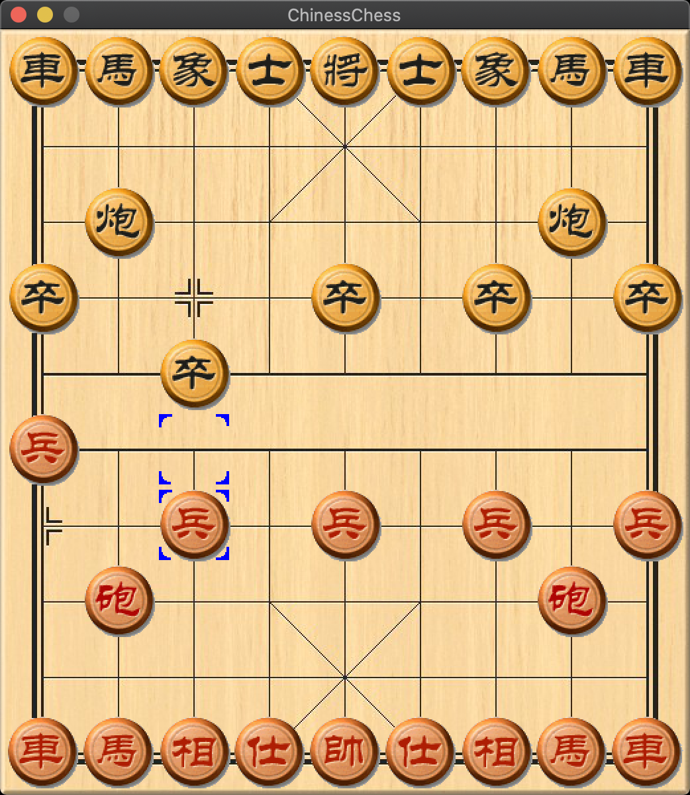

项目地址：
- Github: https://github.com/netcan/AnimalChess
- Crate.io: https://crates.io/crates/animal_chess
- lib.rs: https://lib.rs/crates/animal_chess
好久没更新 blog 了，主要技术文章都是在公司内部写，后面看看有没有机会同步到 blog 上。
现在利用业余时间写了棋类游戏，起初是因为部门最近举行编程大赛，主题是写一个中国象棋 AI，这期间偷偷参加了比赛，参考了国际、中国象棋的相关算法，最后利用 Alpha-Beta 剪枝算法，取得了总决赛季军名次，这个名次对我们来说还可以，因为八强中有七强是直接拿开源代码稍微改改就比赛了的，我们全靠自己写，拿到这个名次还算可以。
还是要吐槽这次比赛的，毕竟部门是第一次举办软件大赛，选了这种网上代码一大堆的题目实在没意思。还是无线的软件大赛有意思，题目比较偏门，比如 18 年那次比赛是写一个 RTS 对抗游戏的 ai，网上没有现成的代码可利用，全靠手写，就这样拿了冠军。
编码是我的爱好，业余时间想写点什么来消遣一下，正好最近这个象棋游戏给了我启发，不如直接也从头写一个玩玩，既然写就需要考虑用什么语言写了，C/C++是我的强项，写了对我来说没任何编码技巧上的提升，就用 Rust 来试试手，看看 编码体验 如何吧，于是有了下面的项目：
把 GUI 写完后，发现在写下去没意思，因为在比赛的时候已经用 C++ 把 AI 写过一编，于是就先搁置了。

后来想起了小学爱玩的斗兽棋，心血来潮，规则比较简单，分支因子也小，相对象棋来说简单多了，然后就收集素材，很快把象棋的 GUI 改成了斗兽棋的，并添加了 AI。虽然目前的 AI 比较弱智，但是我目前已经很难赢了😂。

模块划分
接下来讲讲实现部分。目前项目由四部分实现：
src
├── ai.rs # AI 实现
├── chess.rs # 棋子的定义
├── game.rs # 核心框架、图像渲染
└── main.rs # 程序主入口首先需要 GUI 来交互，我考虑了 SDL 框架，因为上手简单，很快仿着 rust-sdl2 例子写了个 gui 出来：https://docs.rs/sdl2/0.34.0/sdl2/#getting-started。
包管理
现代语言的包管理都做的不错，Rust 也不例外，这里我需要 SDL 库的支持，在 Cargo.toml 文件中加上这么几句：
[dependencies.sdl2]
version = "0.34.1"
default-features = false
features = ["image", "unsafe_textures"]构建程序的时候自动下载依赖包进行编译。
类型别名
和 C 的 typedef，C++ 的using 类似，Rust 也支持别名：
pub type POS = u8;
pub type MOVE = u16;
pub type ScoreType = i32;异常处理
来看看异常处理，Rust 有个语法糖 ? 可以很简单的处理异常。而通常 Result 类型能够很好代替传统的错误码处理方式，毕竟 Result 是可以通过 and_then 组合子串联组合错误处理过程。
fn main() -> Result<(), String> {
let sdl_ctx = sdl2::init()?;
let video_sys = sdl_ctx.video()?;
let windows = video_sys.window("AnimalChess", WINDOW_WIDTH, WINDOW_HEIGHT)
.position_centered()
// .resizable()
.allow_highdpi()
.build().expect("could not initialize video subsystem");
let mut game = Game::new(windows, sdl_ctx.event_pump()?);
game.run()?;
Ok(())
}其中 sdl2::init()? 表达了 init 可能失败导致 panic，我也不处理这个异常，直接通过? 扔出去。
结构体定义
然后把 GUI 部分从 main 提取出来，封装到 Game 类中：
pub struct Game {
pub chesses: [[ChessId; COL_NUM]; ROW_NUM],
chesses_textures: Vec<Texture>,
pub role: Role, // 轮到谁下
board: Texture,
canvas: WindowCanvas,
event_pump: EventPump,
selected_chess: Option<POS>,
selected_frame: Texture,
movable_pos: Vec<MOVE>,
pub compture_turn: bool,
pub compture_mv: Option<MOVE>,
ctx: VecDeque<Context>,
pub history_table: HisTblType,
}if-let表达式，结构化绑定
其中棋子、棋盘的素材存到了 chesses_textures, board 成员中，并用 chesses 存放了棋盘内容。selected_chess存的是当前用户点击的棋子，movable_pos存放的是当前选中棋子可走的格子，当用户点击棋盘的时候，可能是选中棋子，也可能是移动棋子，如下实现：
fn process_click(&mut self, pos: (i32, i32)) {
if let Some(dst) = self.get_click_rect(pos) {
if get_chess_role(self.chesses[dst.0][dst.1]) != self.role {
// may be move
if let Some(_) = self.movable_pos.iter().find(|&&mv| { return get_dst_pos(mv) == to_pos(&dst) }) {
let src = self.selected_chess.unwrap();
self.move_chess(to_move(&(get_pos(src), dst)));
}
self.selected_chess = None;
} else { // must be selected, because role is same as chess
println!("selected_chess: {:?}", to_pos(&dst));
self.selected_chess = Some(to_pos(&dst));
}
self.movable_pos.clear();
}
}这时候看到结构绑定的好处了，get_click_rect返回一个 Option<(usize, usize)> 值，将用户的鼠标位置转换成棋盘的行列位置。通过 if let 语句来获得 Some 里面的值并取出，接着进行判断。若用户没有选中棋子，这可能是移动棋子，这时候通过查找 movable_pos 来判断是否移动。
再来看一个例子：
for event in self.event_pump.poll_iter() {
match event {
// ...
Event::KeyDown { keycode: Some(keycode), .. } => {
match keycode {
Keycode::Escape => { break; }
Keycode::U => { undo = true; }
_ => {}
}
}
Event::MouseButtonDown {x, y, ..} => { click_pos = (x, y); }
_ => {}
}
}结构化绑定，可以分别取出结构体 Event::KeyDown, Event::MouseButtonDown 对象里的成员变量：keycode, x, y。
通过结构化绑定，写起来很爽。目前 C++ 17 也有了结构化绑定，但是没有 Rust 那么强大。对于 Option 这个表达可有的概念，C++17 也有了std::optional。
match 表达式
Rust 还有一个强大的语句，那就是match，前面例子已经介绍过了，写起来是这样的。判断棋子是否进入了对方的兽穴：
pub fn check_in_den(&self, pos: POS) -> bool {
let pos_ = get_pos(pos);
match (get_chess_role(self.chesses[pos_.0][pos_.1]), pos) {
(RED, BLACK_DEN) | (BLACK, RED_DEN) => return true,
_ => { return false }
}
}其中 (RED, BLACK_DEN) | (BLACK, RED_DEN) => return true 语义很清晰，如果红色棋子进了黑色兽穴，或者黑色棋子进了红色兽穴，则为真；其他情况为假。如果换成 if-else 语句，写出来就很丑了。
还有 check_movable 里的判断吃子代码也很简洁：
match (src_chess_type, dst_chess_type) {
(RAT, ELEPHANT) => ! Self::check_in_water(src),
(ELEPHANT, RAT) => false,
(s, d) => s <= d || self.check_in_traps(dst)
}- 老鼠若不在水里则能够吃大象：
(RAT, ELEPHANT) => ! Self::check_in_water(src) - 大象在任何情况下都不能吃老鼠：
(ELEPHANT, RAT) => false - 其他场景按照大子吃小子规则，若对方在陷阱里，无视这个规则：
(s, d) => s <= d || self.check_in_traps(dst)
再来看看一个例子，就是根据 fen 串来初始化棋盘。fen 串是用字符串记录了棋子在棋盘中的位置，例如初始化的 fen 串是这样的：l5t/1d3c1/r1p1w1e/7/7/7/E1W1P1R/1C3D1/T5L，小写表示黑方，大写表示红方。一个字母表示一个棋子，如果没有棋子，则用数字表示出相邻连续的空位数。斗兽棋共有九行，每行都用一个字符串表示，行间使用正斜杠分割。
解析 fen 串的代码是这样的，很清爽：
fn load_fen(&mut self, fen: &str) {
let fen_u8 = fen.as_bytes();
let mut fen_idx = 0;
let get_role = |c: u8| -> Role {
if (c as char).is_lowercase() { BLACK }
else { RED }
};
let mut pos = 0usize;
while fen_idx < fen_u8.len() {
let mut chess_id = EMPTY;
match fen_u8[fen_idx] {
c @ b'e' | c @ b'E' => { chess_id = get_chess_id(get_role(c), ELEPHANT); }
c @ b'l' | c @ b'L' => { chess_id = get_chess_id(get_role(c), LION); }
c @ b't' | c @ b'T' => { chess_id = get_chess_id(get_role(c), TIGER); }
c @ b'p' | c @ b'P' => { chess_id = get_chess_id(get_role(c), PANTHER); }
c @ b'w' | c @ b'W' => { chess_id = get_chess_id(get_role(c), WOLF); }
c @ b'd' | c @ b'D' => { chess_id = get_chess_id(get_role(c), DOG); }
c @ b'c' | c @ b'C' => { chess_id = get_chess_id(get_role(c), CAT); }
c @ b'r' | c @ b'R' => { chess_id = get_chess_id(get_role(c), RAT); }
n @ b'1' ..= b'9' => { pos += (n - b'0') as usize; }
b'/' => { }
b'' => { break; }
_ => { unreachable!() }
}
if chess_id != EMPTY {
self.chesses[pos / COL_NUM][pos % COL_NUM] = chess_id;
pos += 1;
}
fen_idx += 1;
}
fen_idx += 1; // eat ' '
self.role = if fen_u8[fen_idx] == b'w' { RED }
else { BLACK };
}c @ b'e' | c @ b'E' => { chess_id = get_chess_id(get_role(c), ELEPHANT); }这句表达了若为 e 或者E，则通过颜色来得到对应的棋子 id。可惜 Rust 目前还不支持这种写法：c @ (b'e' | b'E')，目前 or-patterns syntax is experimental，暂时这么写了。
lambda 表达式
let get_role = |c: u8| -> Role {
if (c as char).is_lowercase() { BLACK }
else { RED }
};用 lambda 表达式封装 get_role 来通过字符大小写判断红黑色，避免重复代码，因为这个函数只有内部使用，没必要封装成一个单独函数。
迭代器
Rust 的迭代器也很爽，目前 C++ 20 的 std::views 也简化了这种操作，看看例子。
来看看基本走法的生成，也就是只能走十字，每次只能走一格，老鼠可以进河。
fn generate_basic_steps(&self, src: POS, to_water: bool) -> Vec<MOVE> {
const DX: [i32; 4] = [1, 0, -1, 0];
const DY: [i32; 4] = [0, 1, 0, -1];
let src_ = get_pos(src);
let (x, y) = (src_.0 as i32, src_.1 as i32);
(0..4).into_iter().map(|idx| {
to_move(&(get_pos(src), ((x + DX[idx]) as usize, (y + DY[idx]) as usize)))
}).filter(|&mv| {
let (_, dst) = get_move(mv);
dst.0 < ROW_NUM && dst.1 < COL_NUM &&
self.check_movable(src, get_dst_pos(mv)) &&
(! Self::check_in_water(to_pos(&dst)) || to_water)
}).collect()
}(0..4).into_iter()生成 [0,4) 的 range，然后基于 range 做计算。
通过 idx 得到四个方向的坐标，生成 (src, dst) 移动向量。
.map(|idx| {
to_move(&(get_pos(src), ((x + DX[idx]) as usize, (y + DY[idx]) as usize)))
})过滤四个方向，只有在范围内、可以吃掉对方、能过河的结果保留下来：
.filter(|&mv| {
let (_, dst) = get_move(mv);
dst.0 < ROW_NUM && dst.1 < COL_NUM &&
self.check_movable(src, get_dst_pos(mv)) &&
(! Self::check_in_water(to_pos(&dst)) || to_water)
})接下来是狮子、老虎的走法生成：
fn generate_tl_steps(&self, src: POS) -> Vec<MOVE> {
let mut basic_steps = self.generate_basic_steps(src, false);
let src_ = get_pos(src);
if Self::check_at_bank(src) {
// [2, 6]
if (src_.0 + 2) % 4 == 0 {
basic_steps.push(to_move(&(src_, ((src_.0 + 4) % 8, src_.1))));
} else {
if src_.1 % 6 == 0 {
basic_steps.push(to_move(&(src_, (src_.0, 3))));
} else {
basic_steps.push(to_move(&(src_, (src_.0, 0))));
basic_steps.push(to_move(&(src_, (src_.0, 6))));
}
}
basic_steps = basic_steps.into_iter().filter(|&mv| {
let (src, dst) = (get_src_pos(mv), get_dst_pos(mv));
self.check_movable(src, dst) && !self.check_rat(src, dst)
}).collect()
}
basic_steps
}首先得到基本走法，然后生成跳河走法。最后的 filter 过滤无效的移动，例如狮子老虎跳河的时候中间不能有老鼠，对岸的棋子比自己小时。
basic_steps.into_iter().filter(|&mv| {
let (src, dst) = (get_src_pos(mv), get_dst_pos(mv));
self.check_movable(src, dst) && !self.check_rat(src, dst)
}).collect()通过迭代器的 map 可以做类型转换，从而传参给指定类型的接口。例如 fn draw_frame(&mut self, tgt_pos: &Vec<POS>) 接口，需要的参数类型为Vec<POS>，可实际参数是Vec<MOVE>，通过如下转换：
fn process_selected_chess(&mut self) -> Result<(), String> {
if let Some(pos) = self.selected_chess {
self.draw_frame(&vec![pos])?;
self.movable_pos = self.generate_steps(pos);
self.draw_frame(&self.movable_pos.iter().map(|&mv| { get_dst_pos(mv) }).collect())?;
}
Ok(())
}这个接口绘制选中的棋子、以及可移动的格子的框框，self.movable_pos.iter().map(|&mv| { get_dst_pos(mv) }).collect()进行类型转换，只保留 dst 的坐标。
Borrow Checker
Rust 通过借用检查来避免写出不安全的代码：
- 第一，任何借用必须位于比拥有者更小的作用域
- 第二，对于同一个资源（resource）的借用，即同一个作用域下，要么只有一个对资源 A 的可变引用（
&mut T），要么有 N 个不可变引用（&T），但不能同时存在可变和不可变的引用
所以如下代码：
let mut undo = false;
for event in self.event_pump.poll_iter() {
match event {
// ...
Event::KeyDown { keycode: Some(keycode), .. } => {
match keycode {
Keycode::U => { undo = true; }
_ => {}
}
}
_ => {}
}
}
if undo {
self.undo_move();
if self.compture_turn { self.undo_move(); }
}不能直接写成：
for event in self.event_pump.poll_iter() {
match event {
// ...
Event::KeyDown { keycode: Some(keycode), .. } => {
match keycode {
Keycode::U => {
self.undo_move();
if self.compture_turn { self.undo_move(); }
}
_ => {}
}
}
_ => {}
}
}因为 self.event_pump.poll_iter() 拿到了 &mut self，而self.undo_move() 也拿到了&mut self，这在 Rust 是绝对不允许的。
error[E0499]: cannot borrow `*self` as mutable more than once at a time
--> src/game.rs:440:33
|
433 | for event in self.event_pump.poll_iter() {
| ---------------------------
| |
| first mutable borrow occurs here
| first borrow later used here
...
440 | self.undo_move();
| ^^^^ second mutable borrow occurs here
error[E0499]: cannot borrow `*self` as mutable more than once at a time
--> src/game.rs:441:57
|
433 | for event in self.event_pump.poll_iter() {
| ---------------------------
| |
| first mutable borrow occurs here
| first borrow later used here
...
441 | if self.compture_turn { self.undo_move(); }
| ^^^^ second mutable borrow occurs here宏
宏作为一种预处理阶段字符替换机制，可以消除一些重复代码，比如加载资源文件，可以通过定义简单的 macro_rules! 来复用代码：
macro_rules! load_asset_file {
($name: literal) => { include_bytes!(concat!(env!("CARGO_MANIFEST_DIR"), "/../assets/", $name)) };
}
let mut game = Game {
// ...
board_texture: texture_creator
.load_texture_bytes(load_asset_file!("board.png"))
.expect("board.png"),
selected_frame: texture_creator
.load_texture_bytes(load_asset_file!("oos.gif"))
.expect("oos.gif"),
};Trait
Trait 在 Rust 用于表达接口约束的概念，既支持静态多态，也支持动态多态 dyn trait，和 Haskell 的 typeclass 类似。
存在的问题是不知道一个 struct 对象实现了几个 Trait 接口，只能通过生成的文档查看，弱化版接口了。
这里可以抽象出一个 Player 的 Trait，类似于策略模式，实现不同的 AI 策略。目前实现了 Alpha-Beta 剪枝和蒙特卡罗搜索树两种算法：
pub trait Player {
fn get_move(&mut self) -> MOVE;
}
impl Player for AlphaBeta {
fn get_move(&mut self) -> MOVE {
self.search_main()
}
}
impl Player for MCTSPlayer {
fn get_move(&mut self) -> MOVE {
self.mcts_run(500)
}
}测试
Rust 编译器集成了测试模块，不依赖库的情况下编写自测试用例，通过 assert_eq! 等断言：
#[cfg(test)]
mod tests {
#[test]
fn test_zobrist() {
use crate::board::{Board, to_move};
let mut board = Board::new();
board.load_fen("lL5/7/7/7/7/7/7/7/7 w");
let zobrist_key = board.zobrist_key;
let src = (0, 1);
let dst = (0, 2);
board.move_chess(to_move(&(src, dst)));
board.move_chess(to_move(&(dst, src)));
assert_eq!(zobrist_key, board.zobrist_key);
board.undo_move();
board.undo_move();
assert_eq!(zobrist_key, board.zobrist_key);
board.move_chess(to_move(&(src, (0, 0))));
board.undo_move();
assert_eq!(zobrist_key, board.zobrist_key);
}
}通过 cargo test 执行测试用例。
吐槽
开发过程还是很爽的，但是也有一些小问题，记录在这。
cargo publish发布包的时候，没考虑 assets 的情况，所以 cargo install 后图片资源没法定位，目前没什么好的方案，所以最好通过下载源代码 cargo run 的形式来运行。
相对 C++ 来说标准库不够完善，很多基本接口都没有，例如 std::collections::LinkedList 连排序接口都没有，导致只能使用 Vec 这种简单的数据类型。估计是鼓励用第三方库吧，毕竟 Rust 对包依赖处理地很好。
Borrow Checker 机制有时候太傻了，有时候得交换代码行才能编译通过。
关于内存安全性，例如开发过程中数组越界访问了，会导致 panic 然后挂掉，这应该是最好结果。如果是 C 语言的话，数组越界访问是不会直接挂掉，这就留下了隐患让别有用心的人利用了。
后续
后来补充了 AlphaGo 算法实现，利用 pymodule 模块给 Python 写扩展，然后用 pytorch 库进行强化学习训练，训练了两周没见效果，放弃了。
通过这个项目也认识到了封装的重要性，哪怕再小的数据结构，封装也有利于维护与演进。例如最初的坐标是 (usize, usize)，移动向量是((usize, usize), (usize, usize))，通过类型别名POS 和MOVE，后来分别压缩成 u8 和u16，重构后也没出现过问题。封装也是一种抽象，依赖抽象即能保证我们代码不容易受破坏。
总的来说用 Rust 写起来很舒服，结合了很多语言的优点，从而有足够的表达力，期待今后发展会越来越好吧。